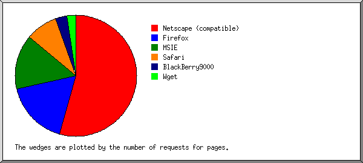

Web Server Statistics for domotek-us.com
Web Server Statistics for domotek-us.com
Program started on Fri, Aug 16 2013 at 8:16 AM.
Analyzed requests from Mon, Jul 29 2013 at 6:38 PM to Fri, Aug 16 2013 at 5:12 AM (17.44 days).
Web Server Statistics for domotek-us.comProgram started on Fri, Aug 16 2013 at 8:16 AM.
Analyzed requests from Mon, Jul 29 2013 at 6:38 PM to Fri, Aug 16 2013 at 5:12 AM (17.44 days).
(Go To: Top | General Summary | Monthly Report | Daily Summary | Hourly Summary | Domain Report | Organization Report | Failed Referrer Report | Referring Site Report | Browser Report | Browser Summary | Operating System Report | Status Code Report | File Size Report | File Type Report | Directory Report | Request Report)
Figures in parentheses refer to the 7-day period ending Aug 16 2013 at 8:16 AM.
Successful requests: 142 (45)
Average successful requests per day: 8 (6)
Successful requests for pages: 138 (41)
Average successful requests for pages per day: 7 (5)
Failed requests: 157 (4)
Redirected requests: 12 (0)
Distinct files requested: 5 (1)
Distinct hosts served: 51 (5)
Data transferred: 64.41 kilobytes (29.60 kilobytes)
Average data transferred per day: 3.69 kilobytes (4.23 kilobytes)
(Go To: Top | General Summary | Monthly Report | Daily Summary | Hourly Summary | Domain Report | Organization Report | Failed Referrer Report | Referring Site Report | Browser Report | Browser Summary | Operating System Report | Status Code Report | File Size Report | File Type Report | Directory Report | Request Report)
Each unit ( ) represents 3 requests for pages or part thereof.
) represents 3 requests for pages or part thereof.
| month | #reqs | #pages | |
|---|---|---|---|
| Jul 2013 | 39 | 39 |   |
| Aug 2013 | 103 | 99 |  |
Busiest month: Aug 2013 (99 requests for pages).
(Go To: Top | General Summary | Monthly Report | Daily Summary | Hourly Summary | Domain Report | Organization Report | Failed Referrer Report | Referring Site Report | Browser Report | Browser Summary | Operating System Report | Status Code Report | File Size Report | File Type Report | Directory Report | Request Report)
Each unit () represents 1 request for a page.
| day | #reqs | #pages | |
|---|---|---|---|
| Sun | 13 | 13 | |
| Mon | 20 | 20 |  |
| Tue | 31 | 27 |  |
| Wed | 32 | 32 | |
| Thu | 28 | 28 | |
| Fri | 11 | 11 | |
| Sat | 7 | 7 | |
(Go To: Top | General Summary | Monthly Report | Daily Summary | Hourly Summary | Domain Report | Organization Report | Failed Referrer Report | Referring Site Report | Browser Report | Browser Summary | Operating System Report | Status Code Report | File Size Report | File Type Report | Directory Report | Request Report)
Each unit () represents 1 request for a page.
| hour | #reqs | #pages | |
|---|---|---|---|
| 0 | 3 | 3 | |
| 1 | 0 | 0 | |
| 2 | 1 | 1 | |
| 3 | 4 | 4 | |
| 4 | 0 | 0 | |
| 5 | 5 | 5 | |
| 6 | 5 | 5 | |
| 7 | 4 | 4 | |
| 8 | 8 | 8 | |
| 9 | 13 | 13 | |
| 10 | 2 | 2 | |
| 11 | 12 | 12 | |
| 12 | 6 | 6 | |
| 13 | 4 | 4 | |
| 14 | 14 | 12 | |
| 15 | 0 | 0 | |
| 16 | 0 | 0 | |
| 17 | 8 | 8 | |
| 18 | 8 | 8 | |
| 19 | 0 | 0 | |
| 20 | 4 | 4 | |
| 21 | 6 | 6 | |
| 22 | 9 | 9 | |
| 23 | 26 | 24 | |
(Go To: Top | General Summary | Monthly Report | Daily Summary | Hourly Summary | Domain Report | Organization Report | Failed Referrer Report | Referring Site Report | Browser Report | Browser Summary | Operating System Report | Status Code Report | File Size Report | File Type Report | Directory Report | Request Report)
Listing domains, sorted by the amount of traffic.
| #reqs | %bytes | domain |
|---|---|---|
| 142 | 100% | [unresolved numerical addresses] |
(Go To: Top | General Summary | Monthly Report | Daily Summary | Hourly Summary | Domain Report | Organization Report | Failed Referrer Report | Referring Site Report | Browser Report | Browser Summary | Operating System Report | Status Code Report | File Size Report | File Type Report | Directory Report | Request Report)
Listing the top 20 organizations by the number of requests, sorted by the number of requests.
| #reqs | %bytes | organization |
|---|---|---|
| 60 | 34.84% | 66.249 |
| 9 | 5.26% | 198.186 |
| 6 | 1.75% | 95 |
| 6 | 3.51% | 69 |
| 6 | 3.51% | 192.95 |
| 5 | 2.92% | 106 |
| 4 | 2.33% | 38 |
| 3 | 1.75% | 216.145 |
| 3 | 1.73% | 216.172 |
| 3 | 1.75% | 71 |
| 3 | 1.17% | 54 |
| 3 | 1.73% | 46 |
| 3 | 1.75% | 37 |
| 3 | 1.75% | 85 |
| 3 | 1.75% | 88 |
| 3 | 1.73% | 5 |
| 2 | 1.16% | 64.135 |
| 2 | 1.16% | 99 |
| 2 | 1.16% | 157.55 |
| 2 | 11.03% | 157.56 |
| 11 | 16.25% | [not listed: 9 organizations] |
(Go To: Top | General Summary | Monthly Report | Daily Summary | Hourly Summary | Domain Report | Organization Report | Failed Referrer Report | Referring Site Report | Browser Report | Browser Summary | Operating System Report | Status Code Report | File Size Report | File Type Report | Directory Report | Request Report)
Listing referring URLs, sorted by the number of failed requests.
| #reqs | URL |
|---|---|
| 2 | http://domotek-us.com/ |
| 1 | http://domotek-la.com/ |
| 1 | http://www.domotek-llc.com/ |
| 1 | http://www.domotek-la.com/ |
| 1 | http://www.domotek-us.com/ |
(Go To: Top | General Summary | Monthly Report | Daily Summary | Hourly Summary | Domain Report | Organization Report | Failed Referrer Report | Referring Site Report | Browser Report | Browser Summary | Operating System Report | Status Code Report | File Size Report | File Type Report | Directory Report | Request Report)
Listing referring sites, sorted by the number of requests.
| #reqs | site |
|---|---|
| 3 | http://whois.domaintools.com/ |
| 2 | http://www.domotek-us.com/ |
| 2 | http://www.domotek-llc.com/ |
| 2 | http://www.domotek-la.com/ |
| 1 | http://domotek-llc.com/ |
| 1 | http://domotek-la.com/ |
| 1 | http://domotek-us.com/ |
| 1 | http://www.netcraft.com/ |
(Go To: Top | General Summary | Monthly Report | Daily Summary | Hourly Summary | Domain Report | Organization Report | Failed Referrer Report | Referring Site Report | Browser Report | Browser Summary | Operating System Report | Status Code Report | File Size Report | File Type Report | Directory Report | Request Report)
Listing browsers with at least 1 request for a page, sorted by the number of requests for pages.
| #reqs | #pages | browser |
|---|---|---|
| 63 | 63 | Mozilla/5.0 (compatible; Googlebot/2.1; +http://www.google.com/bot.html) |
| 6 | 6 | Mozilla/4.0 (compatible; MSIE 6.0; Windows NT 5.1; SV1; .NET CLR 1.1.4322) |
| 6 | 6 | Mozilla/5.0 (Windows NT 5.1; rv:14.0) Gecko/20100101 Firefox/14.0.1 AlexaToolbar/alxf-2.17 |
| 4 | 4 | BlackBerry9000/4.6.0.167 Profile/MIDP-2.0 Configuration/CLDC-1.1 VendorID/102 ips-agent |
| 5 | 3 | Mozilla/4.0 (compatible; MSIE 5.5; Windows NT) |
| 3 | 3 | Mozilla/5.0 (Windows; U; Windows NT 5.1; en; rv:1.9.0.13) Gecko/2009073022 Firefox/3.5.2 (.NET CLR 3.5.30729) SurveyBot/2.3 (DomainTools) |
| 3 | 3 | Wget/1.14 (linux-gnu) |
| 3 | 3 | Mozilla/5.0 (X11; Ubuntu; Linux x86_64; rv:16.0) Gecko/20100101 Firefox/16.0 |
| 5 | 3 | Mozilla/5.0 (compatible; bingbot/2.0; +http://www.bing.com/bingbot.htm) |
| 3 | 3 | Mozilla/4.0 (compatible; MSIE 6.0; Windows NT 5.1; SV1) |
| 3 | 3 | Mozilla/5.0 (Windows NT 5.1) AppleWebKit/537.36 (KHTML, like Gecko) Chrome/28.0.1500.95 Safari/537.36 |
| 3 | 3 | Mozilla/5.0 (compatible; NetcraftSurveyAgent/1.0; +info@netcraft.com) |
| 3 | 3 | Mozilla/4.0 (compatible; MSIE 6.0; Windows 98; Win 9x4.90) |
| 3 | 3 | Mozilla/5.0 (Windows NT 6.1; WOW64; en-US;) AppleWebKit/537.36 (KHTML, like Gecko) Chrome/28.0.1500.95 Safari/537.36 |
| 2 | 2 | Mozilla/4.0 (compatible; MSIE 7.0; Windows NT 5.2) |
| 2 | 2 | Mozilla/5.0 (Windows; U; Windows NT 5.1; fr; rv:1.9.0.1) Gecko/2008070208 Firefox/3.0.1 |
| 2 | 2 | Mozilla/5.0 (Macintosh; U; Intel Mac OS X 10.5; fr; rv:1.9.0.3) Gecko/2008092414 Firefox/3.0.3 |
| 2 | 2 | Mozilla/4.0 (compatible; MSIE 7.0b; Windows NT 6.0) |
| 2 | 2 | Mozilla/5.0 (X11; Ubuntu; Linux i686; rv:14.0; ips-agent) Gecko/20100101 Firefox/14.0.1 |
| 1 | 1 | Mozilla/5.0 (Macintosh; Intel Mac OS X 10_7_5) AppleWebKit/537.36 (KHTML, like Gecko) Chrome/28.0.1500.71 Safari/537.36 |
| 1 | 1 | Mozilla/5.0 (iPhone; CPU iPhone OS 6_1_4 like Mac OS X) AppleWebKit/536.26 (KHTML, like Gecko) Version/6.0 Mobile/10B350 Safari/8536.25 |
| 1 | 1 | Mozilla/5.0 (Windows NT 6.1; rv:22.0) Gecko/20100101 Firefox/22.0 |
| 1 | 1 | Mozilla/5.0 (iPhone; CPU iPhone OS 6_1_3 like Mac OS X) AppleWebKit/536.26 (KHTML, like Gecko) Version/6.0 Mobile/10B329 Safari/8536.25 |
| 1 | 1 | Mozilla/5.0 (Windows NT 5.1) AppleWebKit/537.36 (KHTML, like Gecko) Chrome/28.0.1500.72 Safari/537.36 |
| 1 | 1 | Mozilla/5.0 (Windows; U; Windows NT 6.1; fr; rv:1.9.2) Gecko/20100115 Firefox/3.6 |
| 1 | 1 | Mozilla/5.0 (X11; Ubuntu; Linux x86_64; rv:11.0) Gecko/20100101 Firefox/11.0 |
| 1 | 1 | Mozilla/5.0 (Windows NT 5.1) AppleWebKit/537.36 (KHTML, like Gecko) Chrome/28.0.1500.71 Safari/537.36 |
| 1 | 1 | Mozilla/5.0 (Windows NT 5.1; rv:5.0) Gecko/20100101 Firefox/5.0 |
| 1 | 1 | Mozilla/4.0 (compatible; Netcraft Web Server Survey) |
(Go To: Top | General Summary | Monthly Report | Daily Summary | Hourly Summary | Domain Report | Organization Report | Failed Referrer Report | Referring Site Report | Browser Report | Browser Summary | Operating System Report | Status Code Report | File Size Report | File Type Report | Directory Report | Request Report)

Listing browsers with at least 1 request for a page, sorted by the number of requests for pages.
| # | #reqs | #pages | browser |
|---|---|---|---|
| 1 | 72 | 70 | Netscape (compatible) |
| 2 | 22 | 22 | Firefox |
| 8 | 8 | Firefox/3 | |
| 8 | 8 | Firefox/14 | |
| 3 | 3 | Firefox/16 | |
| 1 | 1 | Firefox/11 | |
| 1 | 1 | Firefox/22 | |
| 1 | 1 | Firefox/5 | |
| 3 | 21 | 19 | MSIE |
| 12 | 12 | MSIE/6 | |
| 4 | 4 | MSIE/7 | |
| 5 | 3 | MSIE/5 | |
| 4 | 11 | 11 | Safari |
| 9 | 9 | Safari/537 | |
| 2 | 2 | Safari/8536 | |
| 5 | 4 | 4 | BlackBerry9000 |
| 4 | 4 | BlackBerry9000/4 | |
| 6 | 3 | 3 | Wget |
| 3 | 3 | Wget/1 |
(Go To: Top | General Summary | Monthly Report | Daily Summary | Hourly Summary | Domain Report | Organization Report | Failed Referrer Report | Referring Site Report | Browser Report | Browser Summary | Operating System Report | Status Code Report | File Size Report | File Type Report | Directory Report | Request Report)
Listing operating systems, sorted by the number of requests for pages.
| # | #reqs | #pages | OS |
|---|---|---|---|
| 1 | 76 | 74 | OS unknown |
| 2 | 43 | 41 | Windows |
| 26 | 26 | Windows XP | |
| 7 | 7 | Unknown Windows | |
| 3 | 3 | Windows 98 | |
| 5 | 3 | Windows NT | |
| 2 | 2 | Windows Server 2003 | |
| 3 | 9 | 9 | Unix |
| 9 | 9 | Linux | |
| 4 | 5 | 5 | Macintosh |
(Go To: Top | General Summary | Monthly Report | Daily Summary | Hourly Summary | Domain Report | Organization Report | Failed Referrer Report | Referring Site Report | Browser Report | Browser Summary | Operating System Report | Status Code Report | File Size Report | File Type Report | Directory Report | Request Report)
Listing status codes, sorted numerically.
| #reqs | status code |
|---|---|
| 142 | 200 OK |
| 8 | 301 Document moved permanently |
| 4 | 302 Document found elsewhere |
| 157 | 404 Document not found |
(Go To: Top | General Summary | Monthly Report | Daily Summary | Hourly Summary | Domain Report | Organization Report | Failed Referrer Report | Referring Site Report | Browser Report | Browser Summary | Operating System Report | Status Code Report | File Size Report | File Type Report | Directory Report | Request Report)
| size | #reqs | %bytes |
|---|---|---|
| 0 | 4 | |
| 1B- 10B | 0 | |
| 11B- 100B | 0 | |
| 101B- 1kB | 134 | 77.93% |
| 1kB- 10kB | 4 | 22.07% |
(Go To: Top | General Summary | Monthly Report | Daily Summary | Hourly Summary | Domain Report | Organization Report | Failed Referrer Report | Referring Site Report | Browser Report | Browser Summary | Operating System Report | Status Code Report | File Size Report | File Type Report | Directory Report | Request Report)
Listing extensions with at least 0.1% of the traffic, sorted by the amount of traffic.
| #reqs | %bytes | extension |
|---|---|---|
| 138 | 77.93% | [directories] |
| 4 | 22.07% | .cgi [CGI scripts] |
(Go To: Top | General Summary | Monthly Report | Daily Summary | Hourly Summary | Domain Report | Organization Report | Failed Referrer Report | Referring Site Report | Browser Report | Browser Summary | Operating System Report | Status Code Report | File Size Report | File Type Report | Directory Report | Request Report)
Listing directories with at least 0.01% of the traffic, sorted by the amount of traffic.
| #reqs | %bytes | directory |
|---|---|---|
| 138 | 77.93% | [root directory] |
| 4 | 22.07% | /cgi-sys/ |
(Go To: Top | General Summary | Monthly Report | Daily Summary | Hourly Summary | Domain Report | Organization Report | Failed Referrer Report | Referring Site Report | Browser Report | Browser Summary | Operating System Report | Status Code Report | File Size Report | File Type Report | Directory Report | Request Report)
Listing files with at least 20 requests, sorted by the number of requests.
| #reqs | %bytes | last time | file |
|---|---|---|---|
| 138 | 77.93% | Aug/16/13 5:12 AM | / |
| 4 | 22.07% | Aug/13/13 11:20 PM | [not listed: 1 file] |